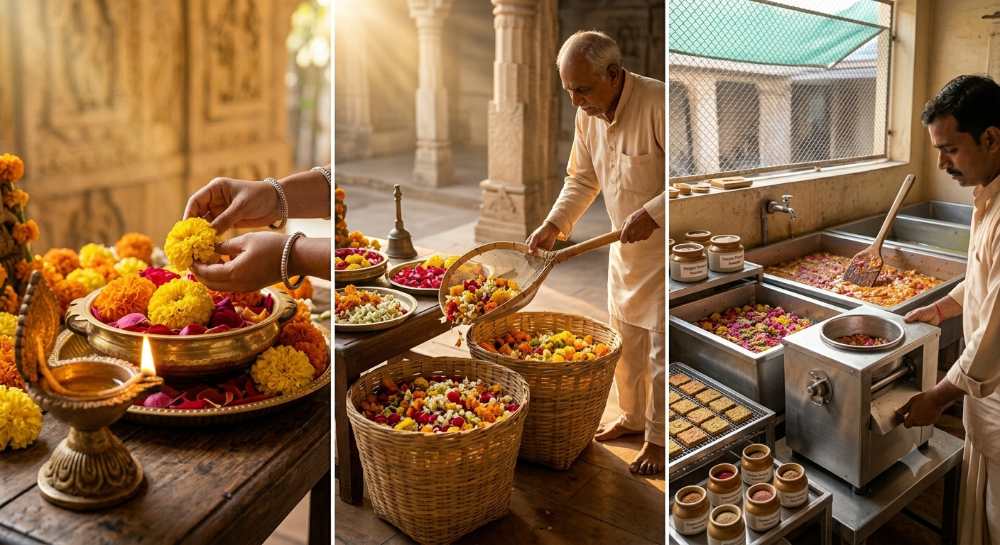

Every Flower Deserves A Second Act
Millions of flowers are discarded after worship. Punarpushp transforms these sacred offerings into luxury fragrances, incense and premium gifting products. By combining sustainability with heritage, we create products that honour devotion while reducing waste.